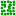
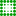
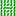
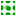
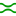
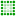

微调工具
快捷键：W 或者 Shift+F2
微调工具( )通过微调来修改/调整已有的对象。它可以调整对象，也可以调整路径和颜色。
{kind=link}
操作方法
选择目标对象；
设置宽度和压力；
选择模式；
在对象上点击并拖动鼠标一段距离后松开鼠标。
(此工具只能调整已经选中的对象)
(此工具不会提示哪些对象已经被选中)
(按空格键可以在 选择工具 和此工具间切换，切换到 选择工具 后可以看到有哪些对象已经被选中)
(如果未选中任何对象，窗口下方的提示栏会提示“没有选择对象!”或“什么也没有选中”)
(模式不同时，光标形状也不相同)
(宽度参数决定橙色圆圈的尺寸，即微调工具所能影响的最大范围)
(宽度参数的单位是屏幕像素，可通过缩放视图比例来快速调整橙色圆圈的尺寸)
(橙色圆圈的中心处调整幅度最大，边缘处调整幅度最小)
(如果调整模式是路径，那么对象一定要先转成路径再调整，比如文本)
辅助快捷键
{kind=link}
{kind=link}
{kind=link}
工具选项
( 宽度 )：光标所影响的范围，即橙色圆圈的尺寸。
( 力度 )：对象被影响的幅度。
(
 )：激活输入设备的压力敏感度参数，如果您使用绘图板，那么此开关可以激活绘图板压力效果。
)：激活输入设备的压力敏感度参数，如果您使用绘图板，那么此开关可以激活绘图板压力效果。(  )：将光标范围内的对象随机移动位置。
(  )：缩小对象；按Shift则放大对象。
(  )：顺时针旋转对象；按Shift则逆时针旋转。
(  )：原位复制对象；按Shift则删除对象。
-
提示
 驿窗注：请先把对象转成路径
驿窗注：请先把对象转成路径调微工具的原理是移动路径上的节点，所以，推压相同的矩形时，如果矩形上节点数量的不同，会导致推压的结果也不相同。并且，因为推压针对的是路径，所以如果对象未转成路径，可能会导致意外，比如闪退。
(  )：拖动光标时，将路径以内偏移方式吸引向光标位置；按Shift则以外偏移方式从光标位置向外排斥。
( )：应用颜色，把当前的填充/描边颜色应用到对象上，填充和描边可以分别单独微调。
提示
驿窗注：快速修改填充/描边属性切换到微调工具后，在窗口右上角可以看到当前的填充和描边效果。如果想快速修改这里的填充和描边属性，请单击此填充/描边，可以打开首选项设置，在首选项中把微调工具设置为“最近使用的样式”，关闭首选项，就可以使用窗口下方的色板来修改填充和描边：点击色块可设置填充；Shift+点击色块可设置描边。
当填充设置为 无 时，微调工具会仅影响描边；当描边设置为 无 时，微调工具会仅影响填充；当填充设置为 未设 时，微调工具会使用黑色来影响填充；当描边设置为 未设 时，微调工具会使用黑色来影响描边；(  )：模糊对象。
( 保真度 )：通过调整节点数量来控制路径的平滑度。数值越低，产生的节点越少，路径越不平滑。用于文本微调时，通常数值应不低于80 。
( 通道 )：在使用应用颜色模式( )和随机颜色模式( )这两种模式时，可以对通道进行控制，即只调整指定通道。HSLO分别对应色相、饱和度、亮度、不透明度。
{kind=link}
{kind=link}
{kind=link}
{kind=link}
{kind=link}
{kind=link}
{kind=link}
{kind=link}
{kind=link}
{kind=link}